건설기계설비기사 (2021-03-07 기출문제)
1과목: 재료역학
1. 직사각형(b×h)의 단면적 A를 갖는 보에 전단력 V가 작용할 때 최대 전단응력은?
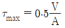
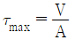
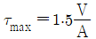
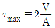
(정답률: 52%)

2. 상단이 고정된 원추 형체의 단위체적에 대한 중량을 γ라 하고 원추 밑면의 지름이 d, 높이가 L 일 때 이 재료의 최대 인장응력을 나타낸 식은? (단, 자중만을 고려한다.)
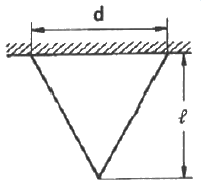
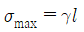
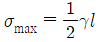
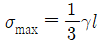
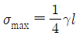
(정답률: 47%)
3. 그림과 같이 균일단면 봉이 100kN의 압축하중을 받고 있다. 재료의 경사 단면 Z-Z에 생기는 수직응력 σn, 전단응력 τn의 값은 약 몇 MPa 인가? (단, 균일단면 봉의 단면적은 1000mm2 이다.)
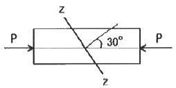
- σn = -38.2, τn = 26.7
- σn = -68.4, τn = 58.8
- σn = -75.0, τn = 43.3
- σn = -86.2, τn = 56.8
(정답률: 45%)
4. 반원 부재에 그림과 같이 0.5R 지점에 하중 P가 작용할 때 지지점 B에서의 반력은?
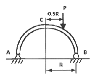
- P/4
- P/2
- 3P/4
- P
(정답률: 50%)
5. 두께 10mm인 강판으로 직경 2.5m의 원통형 압력용기를 제작하였다. 최대 내부 압력이 1200kPa 일 때 축방향 응력은 몇 MPa 인가?
- 75
- 100
- 125
- 150
(정답률: 41%)
6. 두 변의 길이가 각각 b, h 인 직사각형의 A점에 관한 극관성 모멘트는?
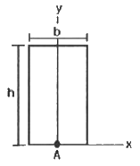
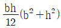
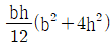
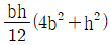
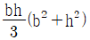
(정답률: 30%)
7. 보의 길이 ℓ에 등분포하중 w를 받는 직사각형 단순보의 최대 처짐량에 대한 설명으로 옳은 것은? (단, 보의 자중은 무시한다.)
- 보의 폭에 정비례한다.
- l의 3승에 정비례한다.
- 보의 높이의 2승에 반비례한다.
- 세로탄성계수에 반비례한다.
(정답률: 49%)
8. 그림에서 고정단에 대한 자유단의 전 비틀림각은? (단, 전단탄성계수는 100GPa 이다.)
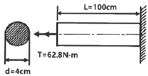
- 0.00025 rad
- 0.0025 rad
- 0.025 rad
- 0.25 rad
(정답률: 41%)
9. 지름 20mm인 구리합금 봉에 30kN의 축방향 인장하중이 작용할 때 체적변형률은 약 얼마인가? (단, 세로탄성계수는 100GPa, 프와송비는 0.3 이다.)
- 0.38
- 0.038
- 0.0038
- 0.00038
(정답률: 34%)
10. 원통형 코일스프링에서 코일 반지름 R, 소선의 지름 d, 전단탄성계수를 G라고 하면 코일 스프링 한 권에 대해서 하중 P가 작용할 때 비틀림각 ø를 나타내는 식은?
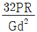
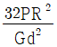
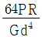
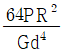
(정답률: 39%)
11. 그림과 같은 일단고정 타단지지보의 중앙에 P=4800N의 하중이 작용하면 지지점의 반력(RB)는 약 몇 kN 인가?
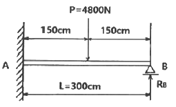
- 3.2
- 2.6
- 1.5
- 1.2
(정답률: 40%)
12. 단면적이 각각 A1, A2, A3 이고, 탄성계수가 각각 E1, E2, E3인 길이 ℓ인 재료가 강성판 사이에서 인장하중 P를 받아 탄성변형 했을 때 재료 1, 3 내부에 생기는 수직응력은? (단, 2개의 강성판은 항상 수평을 유지한다.)
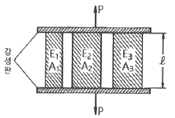
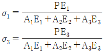
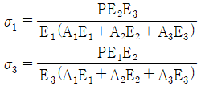
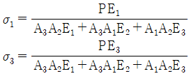
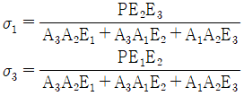
(정답률: 49%)
13. 그림과 같이 등분포하중 w가 가해지고 B점에서 지지되어 있는 고정 지지보가 있다. A점에 존재하는 반력 중 모멘트는?
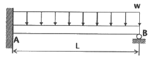
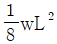
(시계방향) (반시계방향)
(반시계방향)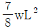
(시계방향) (반시계방향)
(반시계방향)
(정답률: 30%)
14. 지름 6mm인 곧은 강선을 지름 1.2m의 원봉에 감았을 때 강선에 생기는 최대 굽힘응력은 약 몇 MPa 인가? (단, 세로탄성계수는 200GPa이다.)
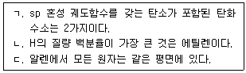
- 500
- 800
- 900
- 1000
(정답률: 23%)
15. 지름 20mm, 길이 50mm의 구리 막대의 양단을 고정하고 막대를 가열하여 40℃ 상승했을 때 고정단을 누르는 힘은 약 몇 kN 인가? (단, 구리의 선팽창계수 α=0.16×10-4/℃, 세로탄성계수는 110GPa 이다.)
- 52
- 30
- 25
- 22
(정답률: 44%)
16. 지름 10mm, 길이 2m 인 둥근 막대의 한끝을 고정하고 타단을 자유로이 10°만큼 비틀었다면 막대에 생기는 최대 전단응력은 약 몇 MPa 인가? (단, 재료의 전단탄성계수는 84GPa 이다.)
- 18.3
- 36.6
- 54.7
- 73.2
(정답률: 40%)
17. 단면계수가 0.01m3 사각형 단면의 양단 고정보가 2m의 길이를 가지고 있다. 중앙에 최대 몇 kN의 집중하중을 가할 수 있는가? (단, 재료의 허용굽힘응력은 80 MPa 이다.)
- 800
- 1600
- 2400
- 3200
(정답률: 24%)
18. 그림과 같이 균일분포 하중을 받는 보의 지점 B에서의 굽힘모멘트는 몇 kN·m 인가?
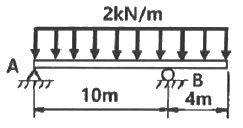
- 16
- 10
- 8
- 1.6
(정답률: 40%)
19. 길이 500mm, 지름 16mm의 균일한 강봉의 양 끝에 12kN의 축 방향 하중이 작용하여 길이는 300μm 가 증가하고 지름은 2.4μm가 감소하였다. 이 선형 탄성 거동하는 봉 재료의 프와송비는?
- 0.22
- 0.25
- 0.29
- 0.32
(정답률: 41%)
20. 지름이 2cm 이고 길이가 1m인 원통형 중실기둥의 좌굴에 관한 임계하중을 오일러공식으로 구하면 약 몇 kN 인가? (단, 기둥의 양단은 회전단이고, 세로탄성곗는 200GPa 이다.)
- 11.5
- 13.5
- 15.5
- 17.5
(정답률: 44%)
2과목: 기계열역학
21. 증기터빈에서 질량유량이 1.5kg/s 이고, 열손실률이 8.5kW 이다. 터빈으로 출입하는 수증기에 대한 값은 아래 그림과 같다면 터빈의 출력은 약 몇 kW 인가?
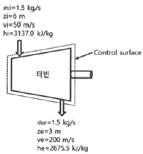
- 273 kW
- 656 kW
- 1357 kW
- 2616 kW
(정답률: 30%)
22. 수소(H2)가 이상기체라면 절대압력 1MPa, 온도 100℃ 에서의 비체적은 약 몇 m3/kg인가? (단, 일반기체상수는 8.3145 kJ/(kmol·K) 이다.)
- 0.781
- 1.26
- 1.55
- 3.46
(정답률: 34%)
23. 열펌프를 난방에 이용하려고 한다. 실내 온도는 18℃이고, 실외 온도는 –15℃이며 벽을 통한 열손실은 12kW 이다. 열펌프를 구동하기 위해 필요한 최소 동력은 약 몇 kW 인가?
- 0.65 kW
- 0.74 kW
- 1.36 kW
- 1.53 kW
(정답률: 28%)
24. 계가 정적과정으로 상태 1에서 상태 2로 변화할 때 단순압축성 계에 대한 열역학 제1법칙을 바르게 설명한 것은? (단, U, Q, W는 각각 내부에너지, 열량, 일량이다.)(오류 신고가 접수된 문제입니다. 반드시 정답과 해설을 확인하시기 바랍니다.)
- U1 - U2 = Q12
- U2 - U1 = Q12
- U1 - U2 = W12
- U2 - U1 = W12
(정답률: 12%)
25. 완전가스의 내부에너지(u)는 어떤 함수인가?
- 압력과 온도의 함수이다.
- 압력만의 함수이다.
- 체적과 압력의 함수이다.
- 온도만의 함수이다.
(정답률: 33%)
26. 비열비가 1.29, 분자량이 44인 이상 기체의 정압비열은 약 몇 kJ/(kg·K)인가? (단, 일반기체상수는 8.3145 kJ/(kmol·K) 이다.)
- 0.51
- 0.69
- 0.84
- 0.91
(정답률: 36%)
27. 계가 비가역 사이클을 이룰 때 클라우지우스(Clausius)의 적분을 옳게 나타낸 것은? (단, T는 온도, Q는 열량이다.)
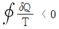
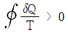
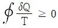
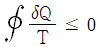
(정답률: 31%)
28. 한 밀폐계가 190kJ의 열을 받으면서 외부에 20kJ의 일을 한다면 이 계의 내부에너지의 변화는 약 얼마인가?
- 210 kJ 만큼 증가한다.
- 210 kJ 만큼 감소한다.
- 170 kJ 만큼 증가한다.
- 170 kJ 만큼 감소한다.
(정답률: 39%)
29. 밀폐용기에 비내부에너지가 200kJ/kg인 기체가 0.5kg 들어있다. 이 기체를 용량이 500W인 전기가열기로 2분 동안 가열한다면 최종상태에서 기체의 내부에너지는 약 몇 kJ 인가? (단, 열량은 기체로만 전달된다고 한다.)
- 20 kJ
- 100 kJ
- 120 kJ
- 160 kJ
(정답률: 37%)
30. 온도가 127℃, 압력이 0.5MPa, 비체적이 0.4m3/kg인 이상기체가 같은 압력하에서 비체적이 0.3m3/kg 으로 되었다면 온도는 약 몇 ℃가 되는가?
- 16
- 27
- 96
- 300
(정답률: 32%)
31. 온도 20℃에서 계기압력 0.183MPa의 타이어가 고속주행으로 온도 80℃로 상승할 때 압력은 주행 전과 비교하여 약 몇 kPa 상승하는가? (단, 타이어의 체적은 변하지 않고, 타이어 내의 공기는 이상기체로 가정하며, 대기압은 101.3 kPa 이다.)
- 37 kPa
- 58 kPa
- 286 kPa
- 445 kPa
(정답률: 24%)
32. 다음 중 가장 낮은 온도는?
- 104 ℃
- 284 °F
- 410 K
- 684 R
(정답률: 40%)
33. 온도 15℃, 압력 100kPa 상태의 체적이 일정한 용기 안에 어떤 이상 기체 5kg이 들어 있다. 이 기체가 50℃가 될 때까지 가열되는 동안의 엔트로피 증가량은 약 몇 kJ/K인가? (단, 이 기체의 정압비열과 정적비열은 각각 1001 kJ/(kg·K), 0.717 kJ/(kg·K) 이다.)
- 0.411
- 0.486
- 0.575
- 0.732
(정답률: 29%)
34. 증기를 가역 단열과정을 거쳐 팽창시키면 증기의 엔트로피는?
- 증가한다.
- 감소한다.
- 변하지 않는다.
- 경우에 따라 증가도 하고, 감소도 한다.
(정답률: 40%)
35. 증기동력 사이클의 종류 중 재열사이클의 목적으로 가장 거리가 먼 것은?
- 터빈 출구의 습도가 증가하여 터빈 날개를 보호한다.
- 이론 열효율이 증가한다.
- 수명이 연장된다.
- 터빈 출구의 질(quality)을 향상시킨다.
(정답률: 34%)
36. 오토사이클의 압축비(ε)가 8 일 때, 이론 열효율은 약 몇 % 인가? (단, 비열비(k)는 1.4 이다.)
- 36.8%
- 46.7%
- 56.5%
- 66.6%
(정답률: 38%)
37. 10℃에서 160℃까지 공기의 평균 정적비열은 0.7315 kJ/(kg·K)이다. 이 온도 변화에서 공기 1kg의 내부에너지 변호는 약 몇 kJ 인가?
- 101.1 kJ
- 109.7 kJ
- 120.6 kJ
- 131.7 kJ
(정답률: 41%)
38. 이상적인 카르노 사이클의 열기관이 500℃인 열원으로부터 500 kJ을 받고, 25℃에 열을 방출한다. 이 사이클의 일(W)과 효율(ηth)은 얼마인가?
- W = 307.2 kJ, ηth = 0.6143
- W = 307.2 kJ, ηth = 0.5748
- W = 250.3 kJ, ηth = 0.6143
- W = 250.3 kJ, ηth = 0.5748
(정답률: 38%)
39. 과열증기를 냉각시켰더니 포화영역 안으로 들어와서 비체적이 0.2327m3/kg 이 되었다. 이 때 포화액과 포화증기의 비체적이 각각 1.079×10-3m3/kg, 0.5243m3/kg 이라면, 건도는 얼마인가?
- 0.964
- 0.772
- 0.653
- 0.443
(정답률: 36%)
40. 어떤 냉동기에서 0℃의 물로 0℃의 얼음 2ton을 만드는데 180MJ의 일이 소요된다면 이 냉동기의 성적계수는? (단, 물의 용해열은 334 kJ/kg 이다.)
- 2.⑤
- 2.32
- 2.65
- 3.71
(정답률: 34%)
3과목: 기계유체역학
41. 유동장에 미치는 힘 가운데 유체의 압축성에 의한 힘만이 중요할 때에 적용할 수 있는 무차원수로 옳은 것은?
- 오일러수
- 레이놀즈수
- 프루드수
- 마하수
(정답률: 19%)
42. Stokes의 법칙에 의해 비압축성 점성유체에 구(sphere)가 낙하될 때 항력(D)을 나타낸 식으로 옳은 것은? (단, μ : 유체의 점성계수, α : 구의 반지름, V : 구의 평균속도, CD : 항력계수, 레이놀즈수가 1보다 작아 박리가 존재하지 않는다고 가정한다.)
- D = 6παμV
- D = 4 αμV
- D = 2παμV
- D = CDπαμV
(정답률: 35%)
43. 경계층의 박리(Sparation)가 일어나는 주 원인은?
- 압력이 증기압 이하로 떨어지기 때문에
- 유동방향으로 밀도가 감소하기 때문에
- 경계층의 두께가 0으로 수렴하기 때문에
- 유동과정에 역압력 구배가 발생하기 때문에
(정답률: 35%)
44. 길이 600m 이고 속도 15km/h 인 선박에 대해 물속에서의 조파 저항을 연구하기 위해 길이 6m인 모형선의 속도는 몇 km/h 으로 해야 하는가?
- 2.7
- 2.0
- 1.5
- 1.0
(정답률: 38%)
45. 안지름 1cm의 원관 내를 유동하는 0℃의 물의 층류 임계레이놀즈수가 2100일 때 임계속도는 약 몇 cm/s 인가? (단, 0℃ 물의 동점성계수는 0.01787 cm2/s 이다.)
- 37.5
- 375
- 75.1
- 751
(정답률: 34%)
46. 어떤 물체가 대기 중에서 무게는 6N 이고 수중에서 무게는 1.1N 이었다. 이 물체의 비중은 약 얼마인가?
- 1.1
- 1.2
- 2.4
- 5.5
(정답률: 18%)
47. 기준면에 있는 어떤 지점에서의 물의 유속이 6m/s, 압력이 40kPa 일 때 이 지점에서의 물의 수력기울기선의 높이는 약 몇 m 인가?
- 3.24
- 4.08
- 5.92
- 6.81
(정답률: 21%)
48. (x, y) 좌표계의 비회전 2차원 유동장에서의 속도 포텐셜(potential) ø는 ø=2x2y 로 주어졌다. 이 때 점(3, 2)인 곳에서 속도 벡터는? (단, 속도포텐셜 ø는
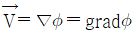
로 정의된다.)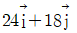
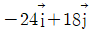
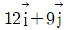
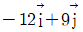
(정답률: 39%)
49. 지름 D1=30cm의 원형 물제트가 대기압 상태에서 V의 속도로 중앙부분에 구멍이 뚫린 고정 원판에 충돌하여, 원판 뒤로 지름 D2=10cm의 원형 물제트가 같은 속도로 흘러나가고 있다. 이 원판이 받는 힘이 100N 이라면 물제트의 속도 V는 약 몇 m/s 인가?
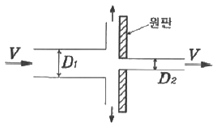
- 0.95
- 1.26
- 1.59
- 2.35
(정답률: 29%)
50. 가스 속에 피토관을 삽입하여 압력을 측정하였더니 정체압이 128Pa, 정압이 120Pa 이었다. 이 위치에서의 유속은 몇 m/s 인가? (단, 가스의 밀도는 1.0 kg/m3이다.)
- 1
- 2
- 4
- 8
(정답률: 32%)
51. 지름 4m 의 원형수문이 수면과 수직방향이고 그 최상단이 수면에서 3.5m 만큼 잠겨있을 때 수문에 작용하는 힘 F와 수면으로부터 힘의 작용점까지의 거리 x는 각각 얼마인가?
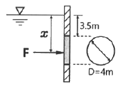
- 638kN, 5.68m
- 677kN, 5.68m
- 638kN, 5.57m
- 677kN, 5.57m
(정답률: 34%)
52. 그림과 같은 탱크에서 A점에 표준 대기압이 작용하고 있을 때, B점의 절대압력은 약 몇 kPa 인가? (단, A점과 B점의 수직거리는 2.5m 이고 기름의 비중은 0.92 이다.)
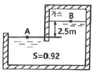
- 78.8
- 788
- 179.8
- 1798
(정답률: 37%)
53. 2차원 직각좌표계 (x, y) 상에서 x방향의 속도 u = 1, y방향의 속도 v = 2x인 어떤 정상상태의 이상유체에 대한 유동장이 있다. 다음 중 같은 유선 상에 있는 점을 모두 고르면?
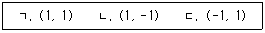
- ㄱ, ㄴ
- ㄴ, ㄷ
- ㄱ, ㄷ
- ㄱ, ㄴ, ㄷ
(정답률: 19%)
54. 표면장력이 0.07 N/m인 물방울의 내부압력이 외부압력보다 10Pa 크게 되려면 물방의 지름은 몇 cm 인가?
- 0.14
- 1.4
- 0.28
- 2.8
(정답률: 32%)
55. 일률(power)을 기본차원인 M(질량), L(길이), T(시간)로 나타내면?
- L2T-2
- ML2T-1
- ML2T-2
- ML2T-3
(정답률: 35%)
56. 평면 벽과 나란한 방향으로 점성계수가 2×10-5 Pa·s 인 유체가 흐를 때, 평면과의 수직거리 y[m]인 위치에서의 속도가 y = 5(1 – e-0.2v)[m/s] 이다. 유체에 걸리는 최대 전단응력은 약 몇 Pa 인가?
- 2×10-5
- 2×10-6
- 5×10-6
- 10-4
(정답률: 32%)
57. 수평으로 놓인 지름 10cm, 길이 200m 인 파이프에 완전히 열린 글로브 밸브가 설치되어 있고, 흐르는 물의 평균속도는 2m/s 이다. 파이프의 관마찰계수가 0.02이고, 전체 수두손실이 10m 이면, 글로브 밸브의 손실계수는 약 얼마인가?
- 0.4
- 1.8
- 5.8
- 9.0
(정답률: 25%)
58. 동점성계수가 1×10-4 m2/s 인 기름이 안지름 50mm의 관을 3m/s의 속도로 흐를 때 관의 마찰계수는?
- 0.015
- 0.027
- 0.043
- 0.061
(정답률: 35%)
59. 유체역학에서 연속방정식에 대한 설명으로 옳은 것은?
- 뉴턴의 운동 제2법칙이 유체 중의 모든 점에서 만족하여야 함을 요구한다.
- 에너지와 일 사이의 관계를 나타낸 것이다.
- 한 유선 이에 두 점에 대한 단위 체적당의 운동량의 관계를 나타낸 것이다.
- 검사체적에 대한 질량 보존을 나타내는 일반적인 표현식이다.
(정답률: 28%)
60. 다음 중 정체압의 설명으로 틀린 것은?
- 정체압은 정압과 같거나 크다.
- 정체압은 액주계로 측정할 수 없다.
- 정체압은 유체의 밀도에 영향을 받는다.
- 같은 정압의 유체에서는 속도가 빠를수록 정체압이 커진다.
(정답률: 28%)
4과목: 유체기계 및 유압기기
61. 압축기의 손실을 기계손실과 유체손실로 구분할 때 다음 중 유체손실에 속하지 않는 것은?
- 흡입구에서 송출구에 이르기까지 유체전체에 관한 마찰 손실
- 곡관이나 단면변화에 의한 손실
- 베어링, 패킹상자 및 기밀장치 등에 의한 손실
- 회전차 입구 및 출구에서의 충돌손실
(정답률: 65%)
62. 펌프의 운전 중 관로에 장치된 밸브를 급폐쇄한 경우 관로 내 압력이 변화(상승,하강 반복)되어 충격파가 발생하는 것은?
- 공동현상
- 수격현상
- 서징현상
- 부식작용
(정답률: 59%)
63. 진공펌프의 성능표시에 대한 설명으로 틀린 것은?
- 규정압력과 그 때의 배기용량으로 표시한다.
- 도달 가능한 흡입 최소압은 성능을 평가하는 중요한 요소이다.
- 대기압 이하의 압력표시에는 계기압력을 기준으로 한다.
- 진공펌프의 압축비는 배기구의 압력을 흡기구의 압력으로 나눈 값이다.
(정답률: 50%)
64. 다음 중 터보형 펌프가 아닌 것은?
- 원심형 펌프
- 벌류트 펌프
- 사류 펌프
- 피스톤 펌프
(정답률: 61%)
65. 토마계수 σ를 사용하여 펌프의 캐비테이션이 발생하는 한계를 표시할 때, 캐비테이션이 발생하지 않는 영역을 바르게 표시한 것은? (단, H는 유효낙차, Ha는 대기압 수두, Hv는 포화증기압 수두, Hs는 흡출고를 나타낸다. 또한 펌프가 흡출하는 수면은 펌프 아래에 있다.)
- Ha-Hv-Hs ＞ σ×H
- Ha+Hv-Hs ＞ σ×H
- Ha-Hv-Hs ＜ σ×H
- Ha+Hv-Hs ＜ σ×H
(정답률: 44%)
66. 비교회전도 176m3/min, 회전수 2900rpm, 양정도 220m인 4단 원심펌프에서 유량(m3/min)은 얼마인가?
- 2.3
- 2.7
- 1.5
- 1.9
(정답률: 39%)
67. 입력축과 출력축의 토크를 변환시키기 위해 펌프 회전차와 터빈 회전차 중간에 스테이터를 설치한 유체전동기구는?
- 토크 컨버터
- 유체 커플링
- 축압기
- 서보밸브
(정답률: 65%)
68. 수차의 유효 낙차(effective head)를 가장 올바르게 설명한 것은?
- 총 낙차에서 도수로와 방수로의 손실 수두를 뺀 것
- 총 낙차에서 수압관 내의 손실 수두를 뺀 것
- 총 낙차에서 도수로, 수압관, 방수로의 손실 수두를 뺀 것
- 총 낙차에서 터빈의 손실 수두를 뺀 것
(정답률: 47%)
69. 다음 유체기계 중 유체로부터 에너지를 받아 기계적 에너지로 변환시키는 장치로 볼 수 없는 것은?
- 송풍기
- 수차
- 유압모터
- 풍차
(정답률: 59%)
70. 프란시스 수차의 안내깃에 대한 설명으로 틀린 것은?(오류 신고가 접수된 문제입니다. 반드시 정답과 해설을 확인하시기 바랍니다.)
- 회전차의 바깥에 위치한다.
- 부하 변동에 따라서 열림각이 변한다.
- 회전축에 의해 구동된다.
- 물의 선회 속도 성분을 주는 역할을 한다.
(정답률: 38%)
71. 압력 제어 밸브에서 어느 최소 유량에서 어느 최대 유량까지의 사이에 증대되는 압력은?
- 오버라이드 압력
- 전량 압력
- 정격압력
- 서지 압력
(정답률: 56%)
72. 개스킷(gasket)에 대한 설명으로 옳은 것은?
- 고정부분에 사용되는 실(seal)
- 운동부분에 사용되는 실(seal)
- 대기로 개방되어 있는 구멍
- 흐름의 단면적을 감소시켜 관로 내 저항을 갖게 하는 기구
(정답률: 62%)
73. 유압에서 체적탄성계수에 대한 설명으로 틀린 것은?
- 압력의 단위와 같다.
- 압력의 변화량과 체적의 변화량과 관계있다.
- 체적탄성계수의 역수는 압축률로 표현한다.
- 유압에 사용되는 유체가 압축되기 쉬운 정도를 나타낸 것으로 체적탄성계수가 클수록 압축이 잘 된다.
(정답률: 61%)
74. 자중에 의한 낙하, 운동물체의 관성에 의한 액추에이터의 자중 등을 방지하기 위해 배압을 생기게 하고, 다른 방향의 흐름이 자유로 흐르도록 한 밸브는?
- 풋 밸브
- 스풀 밸브
- 카운터 밸런스 밸브
- 변환 밸브
(정답률: 65%)
75. 펌프의 효율을 구하는 식으로 틀린 것은? (단, 펌프에 손실이 없을 때 토출압력은 P0, 실제 펌프 토출압력은 P, 이론 펌프 토출량은 Q0, 실제 펌프 토출량은 Q, 유체동력은 Lh, 축동력은 Ls이다.)
- 용적효율 =
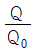
- 압력효율 =
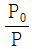
- 기계효율 =
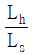
- 전효율 = 효율×압력효율×기계효율
(정답률: 53%)
76. 오일의 팽창, 수축을 이용한 유압 응용장치로 적절하지 않은 것은?
- 전동 개폐 밸브
- 압력계
- 온도계
- 쇼크 업소버
(정답률: 36%)
77. 토출량이 일정한 용적형 펌프의 종류가 아닌 것은?
- 기어 펌프
- 베인 펌프
- 터빈 펌프
- 피스톤 펌프
(정답률: 58%)
78. 그림과 같은 기호의 밸브 명칭은?
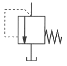
- 스톱 밸브
- 릴리프 밸브
- 체크 밸브
- 가변 교축 밸브
(정답률: 65%)
79. 유압 모터의 효율에 대한 설명으로 틀린 것은?
- 전효율은 체적효율에 비례한다.
- 전효율은 기계효율에 반비례한다.
- 전효율은 축 출력과 유체 압력의 비로 표현한다.
- 체적효율은 실제송출유량과 이론송출유량의 비로 표현한다.
(정답률: 58%)
80. 그림과 같은 유압회로의 명칭으로 적합한 것은?
- 어큐뮬레이터 회로
- 시퀀스 회로
- 블리드 오프 회로
- 로킹(로크) 회로
(정답률: 53%)
5과목: 건설기계일반 및 플랜트배관
81. 굴삭기의 작업 장치 중 유압 셔블(shovel)에 대한 설명으로 적절하지 않은 것은?
- 백호 버킷을 뒤집어 사용하기도 한다.
- 페이스 셔블이라고 한다.
- 장비가 있는 지면보다 낮은 곳을 굴착하기에 적합하다.
- 산악지역에서 토사, 암반 등을 굴착하여 트럭에 싣기에 적합한 장치이다.
(정답률: 57%)
82. 앞쪽에서 굴착하여 로더 차체 위를 넘어 후면에 적재할 수 있는 것으로 터널공사 등에 효과적인 것은?
- 오버 헤드형 로더
- 백호 셔블형 로더
- 프런트 엔드형 로더
- 사이드 덤프형 로더
(정답률: 67%)
83. 아스팔트 피니셔에서 노면에 살포된 혼합재료를 매끈하게 다듬는 판은?
- 스크리드
- 피더
- 리시빙 호퍼
- 아스팔트 캐틀
(정답률: 54%)
84. 스크레이퍼에서 시간당 작업량(W)을 구하는 식으로 옳은 것은? (단, 볼의 용량 Q(m3), 토량환산계수 f, 스크레이퍼 작업효율 E, 사이클시간 Cm(min)이다.)
(정답률: 54%)
85. 증기사용설비 중 응축수를 외부로 자동배출하는 장치로서 응축수에 의한 효율저하를 방지하기 위한 것은?
- 증발기
- 탈기기
- 인젝터
- 증기트랩
(정답률: 55%)
86. 강판제의 드럼 바깥둘레에 여러 개의 돌기가 용접으로 고정되어 있어 흙을 다지는데 매우 효과적인 것은?
- 타이어형 롤러
- 탬핑 롤러
- 머캐덤 롤러
- 탠덤 롤러
(정답률: 41%)
87. 굴삭기의 작업장치가 아닌 것은?
- 붐
- 암
- 버킷
- 마스트
(정답률: 51%)
88. 일반적인 지게차 조향장치로 가장 적절한 방식은?
- 전륜(앞바퀴)조향식에 유압식으로 제어
- 후륜(뒷바퀴)조향식에 유압식으로 제어
- 전륜(앞바퀴)조향식에 공압식으로 제어
- 후륜(뒷바퀴)조향식에 공압식으로 제어
(정답률: 60%)
89. 강의 표면을 경화시키는 방법으로 화학적 경화법이 아닌 것은?
- 침탄법
- 질화법
- 고주파 경화법
- 청화법
(정답률: 63%)
90. 조향기어의 섹터축과 세레이션으로 연결되며 조향핸들을 움직이면 중심링크나 드래그링크를 밀거나 당기는 것은?
- 센터 링크
- 피트먼 암
- 타이로드
- 조향너클
(정답률: 34%)
91. 일반적은 스테인리스 강관에 대한 설명으로 적절하지 않은 것은?
- 크롬을 첨가하며 크롬이 산소나 수산기와 결합하여 강의 표면에 얇은 보호피막을 만들며 이 피막이 부식의 진행을 막는다.
- 용도별로 배관용, 보일러용, 기계구조용 등으로 구분할 수 있다.
- 강관에 비해 기계적 성질이 좋으나 두께가 두꺼워 운반에 어려움이 있다.
- 나사식, 용접식, 몰코식 이음법 등 특수 시공법으로 시공이 간단하다.
(정답률: 60%)
92. 배관부식에 대한 설명으로 틀린 것은?
- 전면부식에는 극간부식, 입계부식, 선택부식이 있다.
- 배관부식에는 금속의 이온화에 의한 부식, 외부에서의 전류에 의한 부식 등이 있다.
- 부식은 물에 접하는 관의 내면에 많이 생기나, 지중 매설관 등은 지하수에 접하는 외벽에도 생긴다.
- 관의 부식 상태는 관의 재질에 따라 따르나, 이에 접하는 물이나 공기가 크게 관계한다.
(정답률: 53%)
93. 파이프와 파이프를 홈 조인트로 체결하기 위해 파이프 끝을 가공하는 기계는?
- 기계톱 머신
- 휠 고속절단기 머신
- CNC 파이프 벤더
- 그루빙 조인트 머신
(정답률: 47%)
94. 유체의 흐름을 한쪽 방향으로만 흐르게 하고 역류 방지를 위해 수평·수직배관에 사용하는 체크밸브의 형식은?
- 풋형
- 스윙형
- 리프트형
- 다이아프램형
(정답률: 39%)
95. 배관 중심선 간의 길이(L)를 나타내는 식으로 옳은 것은? (단, 이음쇠 중심에서 단면까지의 길이는 A, 나사가 물리는 최소길이(여유치수)는 a, 관의 길이는 l 이다.)
- L = l + 2(A – a)
- L = l - 2(A – a)
- L = l + (A – a)
- L = l - (A – a)
(정답률: 47%)
96. 압축 공기를 관 속에 압입하여 이음매에서 공기가 새는 것을 조사하는 시험은?
- 만수시험
- 통수시험
- 수압시험
- 기압시험
(정답률: 61%)
97. 관 공작용 기계에서 동력 나사절삭기의 종류가 아닌 것은?
- 램식 나사절삭기
- 호브식 나사절삭기
- 오스터식 나사절삭기
- 다이헤드식 나사절삭기
(정답률: 52%)
98. 배관지지 장치에 대한 설명으로 틀린 것은?
- 온도변화에 따른 관의 신축이 적합하고 관의지지 간격이 적당할 것
- 무거운 밸브나 계전기 등이 있는 경우 그 기기 가까이에 지지할 것
- 곡관부가 있을 경우 곡관부 멀리서 지지할 것
- 외부 충격, 진동에 충분히 견딜 수 있을 것
(정답률: 57%)
99. 배관 재료를 재질별로 분류한 것으로 틀린 것은?
- 강관 : 탄소강 강관, 합금강 강관
- 주철관 : 보통 주철관, 고급 주철관
- 비철금속관 : 동관, 석면, 시멘트관
- 합성수지관 : 염화비닐관, 폴리에틸렌관
(정답률: 57%)
100. 동관의 끝부분을 원형으로 정형하는 동관용 공구는?
- 리머(reamer)
- 사이징 툴(sizig tool)
- 튜브 커터(tube cutter)
- 파이프 커터(pipe cutter)
(정답률: 43%)